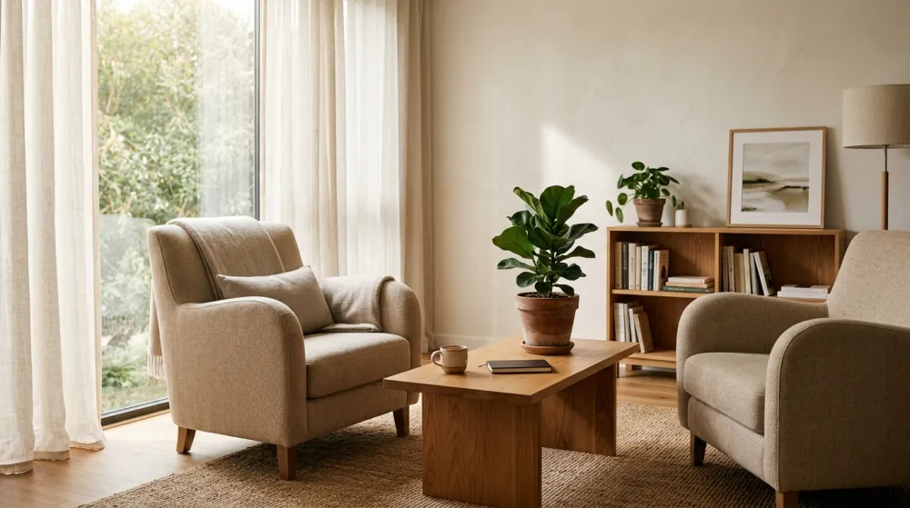
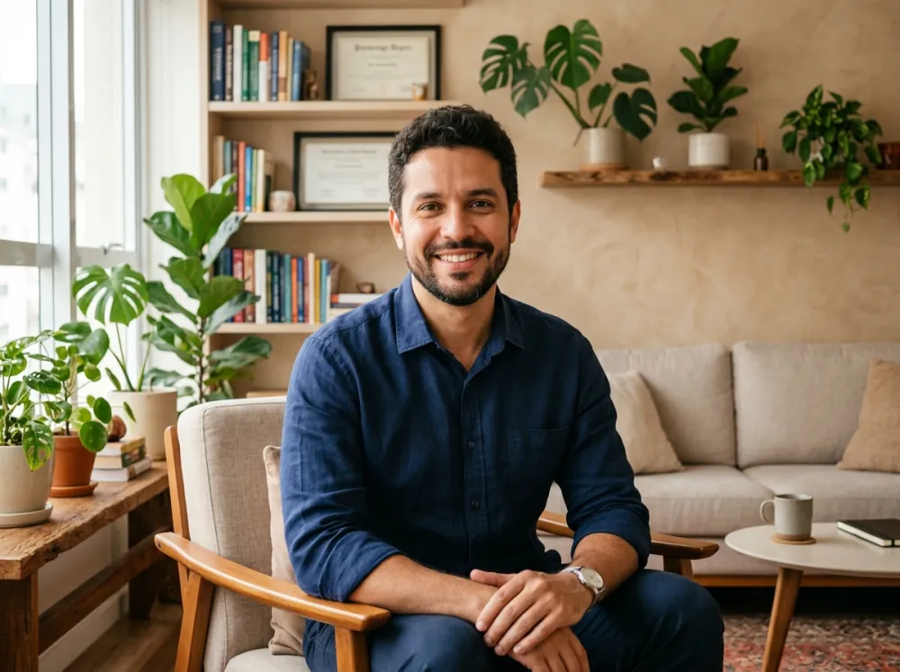
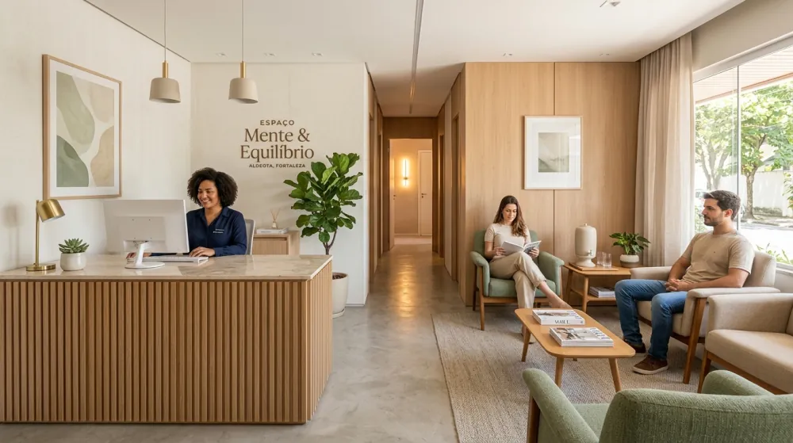

Psicólogo em Fortaleza para adultos, presencial e online
Um espaço de escuta, acolhimento e respeito para quem deseja compreender melhor suas emoções e lidar com os desafios do dia a dia. Atendimento psicológico individual na Aldeota, em Fortaleza, e também online para todo o Brasil.

Aldeota — Fortaleza / CE
Presencial na Av. Santos Dumont e Online
Atendimento presencial na Aldeota
Consultório em localização de fácil acesso em Fortaleza.
Atendimento psicológico online
Sessões online para adultos em todo o Brasil.
Escuta individualizada e confidencial
Cada processo é conduzido respeitando a história e as necessidades de cada pessoa.
Acolhimento com profissionalismo
Comunicação clara, humana e sem julgamentos.

Jorge [Sobrenome] — Psicólogo
CRP 11/XXXXX
Psicoterapia em Fortaleza com acolhimento e clareza
Buscar ajuda psicológica pode ser um passo importante para compreender emoções, pensamentos, comportamentos e situações que têm causado desconforto no dia a dia.
Jorge Psicólogo oferece atendimento psicológico individual para adultos em Fortaleza, com sessões presenciais na Aldeota e atendimento online. O trabalho é conduzido em um ambiente de escuta, respeito, confidencialidade e diálogo.
Cada processo é individual. Por isso, o acompanhamento considera as necessidades, o momento de vida e as particularidades de cada pessoa, sem fórmulas prontas ou promessas de resultados.
Identificação profissional:
Jorge [Sobrenome] — Psicólogo | CRP 11/XXXXX
Como a psicoterapia pode ajudar você
Conheça as modalidades de atendimento disponíveis e encontre aquela que melhor corresponde ao que você está buscando neste momento.
Psicoterapia Individual
Um espaço de escuta para adultos que desejam compreender melhor seus sentimentos, pensamentos, escolhas e relações. O processo pode contribuir para ampliar o autoconhecimento e desenvolver novas formas de lidar com situações da vida cotidiana.
Terapia para Ansiedade e Estresse
Acompanhamento psicológico para pessoas que convivem com preocupações frequentes, tensão, sobrecarga emocional ou dificuldade para desacelerar. O atendimento busca compreender como essas experiências aparecem na rotina e trabalhar estratégias adequadas a cada pessoa.
Psicoterapia para Autoestima
Um processo voltado à compreensão da relação que você construiu consigo mesmo, com sua história e com a maneira como percebe suas capacidades e limitações.
A psicoterapia oferece um espaço para trabalhar autoconhecimento, autoconfiança e padrões que podem estar afetando sua vida pessoal, profissional ou seus relacionamentos.
Atendimento Psicológico Online
Psicoterapia realizada por videochamada para quem busca mais praticidade ou não pode comparecer presencialmente ao consultório em Fortaleza.
O atendimento online preserva o cuidado, a privacidade e a atenção individual, permitindo acompanhamento psicológico independentemente da localização.
Não sabe qual modalidade faz mais sentido para você? Entre em contato pelo WhatsApp para tirar suas dúvidas sobre o atendimento.
Conversar pelo WhatsAppUm atendimento pensado para respeitar o seu processo
Atendimento individualizado
Cada pessoa chega à psicoterapia com uma história diferente. O acompanhamento considera suas necessidades, contexto e momento de vida.
Ambiente acolhedor e sem julgamentos
Um espaço reservado para falar sobre questões importantes com liberdade, respeito e confidencialidade.
Comunicação clara e humana
O processo terapêutico é conduzido com diálogo acessível, evitando uma comunicação distante ou excessivamente técnica.
Atendimento presencial e online
Você pode realizar suas sessões presencialmente na Aldeota, em Fortaleza, ou de forma online, conforme a modalidade disponível.
Localização de fácil acesso
O consultório está localizado na região da Aldeota, próximo a bairros como Meireles, Dionísio Torres, Cocó e Varjota.
Respeito ao seu ritmo
A psicoterapia não segue uma fórmula igual para todas as pessoas. O processo acontece de acordo com as necessidades e particularidades de cada acompanhamento.
Como funciona o atendimento psicológico
1. Entre em contato pelo WhatsApp
Envie uma mensagem para tirar suas primeiras dúvidas e verificar a disponibilidade de horários para atendimento.
2. Escolha a modalidade
O atendimento pode ser presencial na Aldeota, em Fortaleza, ou online, conforme sua necessidade e disponibilidade.
3. Realize a primeira sessão
O primeiro encontro é um momento para compreender o que motivou a busca pela psicoterapia, conhecer sua situação atual e iniciar o processo de acompanhamento.
4. Continuidade do acompanhamento
A frequência e a continuidade das sessões são conversadas de acordo com as necessidades identificadas durante o processo.
5. Desenvolvimento do processo terapêutico
Ao longo dos encontros, diferentes questões podem ser compreendidas e trabalhadas de forma individual, respeitando o ritmo e a realidade de cada pessoa.
Confiança construída com ética e transparência
Como este projeto não possui depoimentos reais de pacientes autorizados para divulgação, nenhuma avaliação ou relato fictício é apresentado como prova social.
Credenciais profissionais verificáveis
Antes da publicação, serão disponibilizados o nome completo do psicólogo, número de registro no CRP, formação e demais qualificações profissionais reais.
Atendimento baseado em confidencialidade
A privacidade e o sigilo fazem parte da relação profissional e são tratados com responsabilidade durante todo o acompanhamento.
Cada processo é único
A psicoterapia não trabalha com resultados garantidos ou soluções iguais para todas as pessoas. O acompanhamento é construído considerando as necessidades e particularidades de cada caso.
Psicólogo na Aldeota, em Fortaleza
O atendimento presencial acontece na Aldeota, região central e de fácil acesso em Fortaleza. O consultório também atende pessoas de bairros próximos, como Meireles, Dionísio Torres, Cocó, Varjota e outras regiões da cidade.
Para quem prefere realizar as sessões à distância, também há atendimento psicológico online para adultos em diferentes regiões do Brasil.
Endereço:
Av. Santos Dumont, 2450, Sala 608, Aldeota, Fortaleza - CE, 60150-161
Horário de atendimento:
Segunda a sexta, das 08:00 às 19:00
Telefone:
(85) 3245-6789WhatsApp:
(85) 99876-5432
Consultório Aldeota
Ambiente planejado para proporcionar conforto, sigilo e serenidade durante todas as etapas do acompanhamento.
Perguntas frequentes sobre psicoterapia em Fortaleza
Que tal dar o primeiro passo para cuidar da sua saúde emocional?
Se você está considerando iniciar a psicoterapia, entre em contato para conhecer melhor o atendimento, esclarecer suas dúvidas e verificar os horários disponíveis.
Você não precisa decidir tudo agora. Uma conversa pelo WhatsApp já pode ajudar a entender como funciona o processo.
Envie uma mensagem para consultar a disponibilidade de atendimento.
Endereço:
Av. Santos Dumont, 2450, Sala 608, Aldeota, Fortaleza - CE, 60150-161
Telefone / WhatsApp:
Telefone: (85) 3245-6789
WhatsApp: (85) 99876-5432
Horário:
Segunda a sexta, das 08:00 às 19:00
Atendimento:
Presencial em Fortaleza e online.